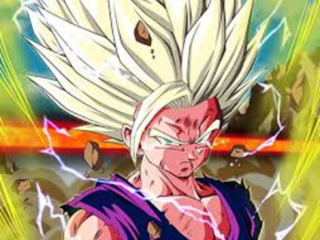

Gohan
Gohan é um dos personagens mais importantes e queridos da franquia Dragon Ball, criada por Akira Toriyama. Ele é o primeiro filho de Goku e Chi-Chi e é conhecido por sua natureza gentil, inteligência e incrível potencial como guerreiro. Desde sua infância, Gohan demonstra um potencial extraordinário em termos de poder de luta, mesmo superando o de seu pai, Goku, em tenra idade. Sua mistura única de bondade e força o torna um dos personagens mais complexos e cativantes da série.